Web-palvelinohjelmointi
Voinko oppia tekemään Facebookin, Flickrin tai Twitterin?
No todellakin!Sisältö, aikataulu ja arvostelu
Kurssilla tutustutaan nykyaikaisten, skaalautuvien ja virheenkestävien web-sovellusten toteuttamiseen, testaamiseen ja julkaisemiseen. Kurssilla keskitytään palvelinpuolen toiminnallisuuden toteuttamiseen. Selainpuolen toiminnallisuudella on kurssilla vain pieni paino. Kurssin opetuskieli on suomi ja ohjelmointikieli Java.
Kurssi aloitetaan tutustumalla web-sovellusten toimintaan Spark-sovelluskehyksen avulla, jonka jälkeen syvennytään hieman suurempiin sovelluksiin ja niiden toteuttamiseen Spring-sovelluskehyksen kautta.
Kurssi sisältää seitsemän tehtäväsarjaa, joista ensimmäinen julkaistaan 5. marraskuuta 2015. Uusia tehtäväsarjoja julkaistaan noin kahden viikon välein -- odotamme Spring Boot 1.3.1:n virallista julkaisua. Seuraavaan tehtäväsarjaan eteneminen vaatii sen, että tekee vähintään 75% edeltävästä tehtäväsetistä.
Opettajille ja opiskelijoille
Kurssi vastaa Helsingin yliopiston tietojenkäsittelytieteen laitoksen kurssia Web-palvelinohjelmointi (5 opintopistettä). Kurssia ja sen materiaalia saa käyttää ja muokata vapaasti, kunhan noudattaa materiaalin alalaidassa olevaa lisenssiä.
Jos olet opettaja ja järjestät kurssista kokeen omassa oppilaitoksessasi, saat tarvittaessa osoitteesta mooc@cs.helsinki.fi koepohjan. Autamme myös tarvittaessa kokeen korjaamisessa.
Jos olet opiskelijana jossain muualla kuin Helsingin yliopistolla ja haluaisit suorittaa kurssin siten, että saat suoritusmerkinnän tai opintopisteet omassa oppilaitoksessasi, etsi omasta oppilaitoksestasi opettaja tai opinto-ohjaaja, joka on valmis valvomaan kokeen ja hyväksymään kurssisuorituksen.
Arvostelu
Kurssin arvostelu -- Helsingin yliopistossa kurssin suorittavilla opiskelijoilla -- perustuu harjoitustehtäviin sekä kahteen kokeeseen. Toinen kokeista tehdään kynällä ja paperilla, ja toinen tietokoneella. Kurssin pisteytys on seuraava:
- Jokaisesta tehtäväsarjasta voi saada 100 pistettä. Täydet 100 pistettä saa tekemällä 100% tehtävistä. Jos tekee puolet tehtävistä, saa 50 pistettä jne.
- Paperilla tehtävästä kokeesta on mahdollista saada 250 pistettä.
- Tietokoneella tehtävästä kokeesta on mahdollista saada 250 pistettä.
Kurssista voi saada yhteensä 1200 pistettä. Sekä paperilla ja kynällä että tietokoneella tehtävistä kokeista on kummastakin saatava vähintään puolet mahdollisista pisteistä kurssin läpäisemiseen. Kurssin arvosanarajat ovat seuraavat:
- 700 -> 1
- 800 -> 2
- 900 -> 3
- 1000 -> 4
- 1100 -> 5
Paikallisen oppilaitoksen opettaja voi päättää myös toisenlaisen arvostelun.
Esitietovaatimukset ja kurssin suorittaminen
Kurssilla oletetaan Java-ohjelmointikielen tuntemus kurssien ohjelmoinnin perusteet ja ohjelmoinnin jatkokurssi laajuudessa (vastaa mooc.fi-osoitteessa olevaa kurssia OhjelmointiMOOC. Tämän lisäksi oletetaan, että osallistuja tuntee Helsingin yliopistolla järjestettävien kurssien Tietokantojen perusteet, Ohjelmistotekniikan menetelmät ja Web-selainohjelmointi aihepiirin oleellisilta osin -- tai, että osaajalla on muuta kautta tarvittava osaaminen.
Omatoimisesta tiedon hakemisesta sekä omista harjoitusprojekteista on huomattavasti apua. Omatoiminen tiedon hakeminen sekä sen harjoittelu on välttämätöntä tällä kurssilla menestymiseen.
Tehtävien tekeminen ja palauttaminen
Kurssin tehtävien tekemisessä hyödynnetään Helsingin yliopiston tietojenkäsittelytieteen laitoksellä kehitettyä Test My Code-palvelua, joka mm. tarjoaa ohjelmointiympäristöön liitettävän TMC-liitännäisen. Kurssitehtävät noudetaan paikalliselle koneelle TMC-liitännäisen avulla. TMC mahdollistaa myös tehtävien suoraviivaisen palauttamisen tehtäväpalvelimelle. Osa kurssin tehtävistä tarkastetaan automaattisesti TMC-palvelun avulla -- muiden tehtävien toiminta tulee taas tarkastaa itse erilaisten tukimateriaalien kuten kuvien avulla.
Kurssilla käytettävä TMC-palvelin löytyy osoitteessa http://tmc.mooc.fi/mooc, kurssin nimenä on 2015-16-wepa-mooc.
Alkutoimet kurssilla käytettävien työvälineiden asentamiseen löytyy osoitteesta http://mooc.fi/courses/general/ohjelmointi/. Huom! Tämän kurssin nimenä TMC:ssä on 2015-16-wepa-mooc.
Kurssin tukimuodot
Kurssilla käytetään #mooc.fi IRC-kanavaa, josta löytyy muita kurssilaisia. Muiden auttaminen kanavalla on vapaaehtoista, mutta luonnollisesti suositeltavaa. Auttamisesta hyötyy apua tarvitsevan lisäksi myös auttaja.
Ohjeet IRC:n käyttöön löytyvät tämän linkin takaa -- tällä hetkellä muita tukikanavia ei ole suunnitteilla.
Teemat
- Osa 1 Johdanto web-sovellusten tekemiseen.
- Osa 2 HTTP-protokolla, sessiot, relaatiotietokannan käyttö.
Teemalistausta täydennetään kurssin edetessä.
Sisällysluettelo
Tehtävät
Osa 1
Web-sovellusten alkeet
Web-sovellukset koostuvat selain- ja palvelinpuolesta. Käyttäjän koneella toimii selainohjelmisto (esim. Google Chrome), jonka kautta käyttäjä tekee pyyntöjä verkossa sijaitsevalle palvelimelle. Kun palvelin vastaanottaa pyynnön, se käsittelee pyynnön ja rakentaa vastauksen. Vastaus voi sisältää esimerkiksi web-sivun HTML-koodia tai jossain muussa muodossa olevaa tietoa.

Selainohjelmointiin ja käyttöliittymäpuoleen keskityttäessä painotetaan rakenteen, ulkoasun ja toiminnallisuuden erottamista toisistaan. Karkeasti voidaan sanoa, että selaimessa näkyvän sivun rakenne määritellään HTML-tiedostoilla, ulkoasu CSS-tiedostoilla ja toiminnallisuus JavaScript-tiedostoilla.
Palvelinpuolen toiminnallisuutta toteutettaessa keskitytään tyypillisesti selainohjelmiston tarvitsevan "APIn" suunnitteluun ja toteutukseen, sivujen muodostamiseen selainohjelmistoa varten, datan tallentamiseen ja käsittelyyn, sekä sellaisten laskentaoperaatioiden toteuttamiseen, joita selainohjelmistossa ei kannata tai voida tehdä.
Ensimmäinen palvelinohjelmisto
Käytämme kurssin alkupuolella Javalla toteutettua Spark -kirjastoa web-sovellusten tekemiseen. Sparkin avulla web-sovellusten teko perustuu valmiiden kirjastometodien käyttöön. Niitä kutsumalla määritellään (1) mihin osoitteeseen tulevat pyynnöt käsitellään tässä metodissa ja (2) mitä pyynnölle tulee tehdä.
Spark-kirjaston saa käyttöön lisäämällä Maven-projektiin seuraavan riippuvuuden.
<dependency>
<groupId>com.sparkjava</groupId>
<artifactId>spark-core</artifactId>
<version>2.3</version>
</dependency>
Kun riippuvuus on lisätty projektiin ja projektista pääsee käsiksi Spark-kirjaston metodeihin ja luokkiin, on palvelinohjelmiston toteutus melko suoraviivaista. Yksinkertaisimmillaan "Hei Maailma!" -tekstin käyttäjälle palauttava sovellus on seuraavanlainen:
import static spark.Spark.*;
public class HeiMaailma {
public static void main(String[] args) {
get("*", (req, res) -> "Hei Maailma!");
}
}
Yllä olevassa esimerkissä käytetään spark-pakkauksessa olevan Spark-luokan staattista metodia get, jolle määritellään kuunneltava osoite -- tässä kaikki "*" -- sekä palvelinohjelmiston pyyntöön palauttama vastaus. Lauseke (req, res) -> "Hei Maailma!" palauttaa palvelimelle tulevaan pyyntöön merkkijonon "Hei Maailma!". Tässä hyödynnetään Java 8:n mukana tulleita uusia ominaisuuksia -- Java 7:llä edelläoleva toteutus olisi näyttänyt seuraavalta:
import spark.Request;
import spark.Response;
import spark.Route;
import static spark.Spark.*;
public class HeiMaailma {
public static void main(String[] args) {
get("*", new Route() {
@Override
public Object handle(Request req, Response res) throws Exception {
return "Hei Maailma!";
}
});
}
}
Tällä kurssilla tulee käyttää Javan versiota 8.
Hello World!
Kuten huomattava osa ohjelmointikursseista, tämäkin kurssi alkaa tehtävällä, jossa toteutettava ohjelma kirjoittaa tekstin Hello World!.
Toteuta tehtäväpohjan pakkauksessa wad.helloworld olevan luokan HelloWorld main-metodiin palvelimen käynnistävä sovellus, joka kuuntelee kaikkia osoitteita. Kun palvelin vastaanottaa pyynnön, tulee palvelimen palauttaa merkkijono "Hello World!".
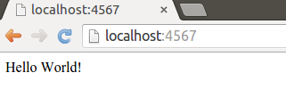
Käynnistä palvelin painamalla NetBeansin play-nappia tai suorittamalla HelloWorld-luokan main-metodi. Avaa nettiselain, mene osoitteeseen http://localhost:4567 ja näet selaimessasi tekstin "Hello World!".
Palvelin sammutetaan NetBeansissa punaista nappia painamalla -- vain yksi sovellus voi olla kerrallaan päällä samassa osoitteessa. Palauta tehtävä lopuksi Test My Code:n submit-napilla.
Palvelinohjelmiston polut
Opimme aiemmin, että get-metodin voi määritellä kuuntelemaan kaikkia palvelimelle tulevia pyyntöjä parametrilla "*". Käytännössä parametrin avulla määritellään polku, johon palvelimelle tulevat pyynnöt voidaan ohjata. Tähdellä määritellään, että kaikki pyynnöt päätyvät samalle polulle. Muiden polkujen määrittely on luonnollisesti myös mahdollista.
Antamalla poluksi merkkijonon "/salaisuus", kaikki web-palvelimen osoitteeseen /salaisuus tehtävät pyynnöt ohjautuvat kyseiseen polkuun liitettyyn toiminnallisuuteen. Allaolevassa esimerkissä määritellään polku /salaisuus ja kerrotaan, että polkuun tehtävät pyynnöt palauttavat merkkijonon "Kryptos".
get("/salaisuus", (req, res) -> "Kryptos");
Yhteen ohjelmaan voi myös määritellä useampia polkuja sekä niihin liittyviä toiminnallisuuksia. Alla olevassa esimerkissä on määritelty kolme erillistä polkua, joista jokainen palauttaa käyttäjälle merkkijonon.
import static spark.Spark.*;
public class Polut {
public static void main(String[] args) {
get("/path", (req, res) -> "Polku (path)");
get("/route", (req, res) -> "Polku (route)");
get("/trail", (req, res) -> "Polku (trail)");
}
}
Hello Routes
Toteuta pakkauksessa wad.helloroutes olevaan luokkaan HelloRoutes seuraava toiminnallisuus:
- Pyyntö polkuun
/hellopalauttaa käyttäjälle merkkijonon "Hello" - Pyyntö polkuun
/routespalauttaa käyttäjälle merkkijonon "Routes"
Alla olevassa kuvassa on esimerkki tilanteesta, missä selaimella on tehty pyyntö polkuun /hello
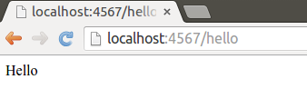
Palauta tehtävä TMC:lle kun olet valmis.
Pyynnön parametrit
Pyynnöissä voi lähettää myös palvelimelle tietoa. Tutustutaan ensin yksinkertaisempaan tapaan, missä pyynnön parametrit lisätään osaksi haettavaa osoitetta. Esimerkiksi pyynnössä http://localhost:4567/salaisuus?onko=nauris on parametri nimeltä onko, jonka arvoksi on määritelty nauris.
Parametrien lisääminen pyyntöön tapahtuu lisäämällä osoitteen perään kysymysmerkki, jota seuraa parametrin nimi, yhtäsuuruusmerkki ja parametrille annettava arvo. Jos parametreja on useampia, erotellaan ne toisistaan &-merkillä. Seuraavassa esimerkissä pyynnössä on kolme parametria, eka, toka ja kolmas, joiden arvot ovat 1, 2 ja 3 vastaavasti.
http://localhost:4567/salaisuus?eka=1&toka=2&kolmas=3
Pyynnössä tuleviin parametreihin pääsee Sparkissa käsiksi req-parametrin metodilla queryParams("parametrinNimi"). Vastaavasti, kaikkien parametrien nimet saa metodilla queryParams().
Allaolevassa esimerkissä on luotu palvelinohjelma, jonka tehtävänä on tervehtiä kaikkia pyynnön tekijöitä. Ohjelma käsittelee polkuun /hei tulevia pyyntöjä ja palauttaa niihin vastauksena tervehdyksen. Tervehdykseen liitetään pyynnössä tulevan nimi-nimisen parametrin arvo.
import static spark.Spark.*;
public class Parametrit {
public static void main(String[] args) {
get("/hei", (req, res) -> "Hei " + req.queryParams("nimi") + ", mitä kuuluu?");
}
}
Nyt esimerkiksi osoitteeseen http://localhost:4567/hei?nimi=Ada tehtävä pyyntö saa vastaukseksi merkkijonon Hei Ada, mitä kuuluu?.
Hello Query Params
Toteuta pakkauksessa wad.helloqueryparams olevaan luokkaan HelloQueryParams seuraava toiminnallisuus:
- Pyyntö polkuun
/hellopalauttaa käyttäjälle merkkijonon "Hello ", johon on liitettyparam-nimisen parametrin sisältämä arvo. - Pyyntö polkuun
/paramspalauttaa käyttäjälle kaikkien pyynnön mukana tulevien parametrien nimet.
Alla olevassa kuvassa on esimerkki tilanteesta, missä selaimella on tehty pyyntö polkuun /params?hello=world&it=works
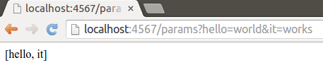
Palauta tehtävä TMC:lle kun olet valmis.
Calculator
Toteuta tässä tehtävässä pakkauksessa wad.calculator sijaitsevaan Calculator-luokkaan seuraava toiminnallisuus:
- Pyyntö polkuun
/addlaskee parametrienfirstjasecondarvot yhteen ja palauttaa vastauksen käyttäjälle. Huomaa että arvot ovat numeroita, ja ne tulee myös käsitellä numeroina. - Pyyntö polkuun
/multiplykertoo parametrienfirstjasecondarvot ja palauttaa vastauksen käyttäjälle. - Pyyntö polkuun
/sumlaskee kaikkien parametrien arvot yhteen ja palauttaa vastauksen käyttäjälle.
Alla on esimerkki ohjelman toiminnasta, kun pyyntö tehdään /sum-polkuun.
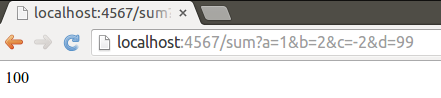
Palauta tehtävä TMC:lle kun olet valmis.
Näkymät ja data
Aiemmat sovelluksemme ovat vastaanottaneet tiettyyn polkuun tulevan pyynnön ja palauttaneet käyttäjälle merkkinomuodossa olevaa tietoa. Tämä ei kuitenkaan ole ainoa palvelinohjelmistojen toimintatyyppi, vaan palvelin voi myös luoda käyttäjälle näkymän, jonka selain lopulta näyttää käyttäjälle. Näkymät luodaan tyypillisesti HTML-kielellä siten, että HTML-kielen sekaan on upotettu komentoja, joiden perusteella näkymään lisätään palvelimen tuottamaa tietoa.
Tällä kurssilla käyttämämme apuväline näkymän luomiseen on Thymeleaf, joka tarjoaa välineitä datan lisäämiseen HTML-sivuille. Käytännössä näkymiä luodessa luodaan ensin HTML-sivut, jonka jälkeen sivuille lisätään komentoja Thymeleafin käsiteltäväksi.
Thymeleaf-sivut ("templatet") sijaitsevat tällä kurssilla projektin kansiossa src/main/resources/templates tai sen alla olevissa kansioissa. NetBeansissa kansio löytyy kun klikataan "Other Sources"-kansiota.
Allaolevassa esimerkissä luodaan juuripolkua / kuunteleva sovellus. Kun sovellukseen tehdään pyyntö, palautetaan HTML-sivu, jonka Thymeleaf käsittelee. Thymeleaf päättelee palautettavan sivun annettavan merkkijonon perusteella -- alla annetaan merkkijono "sivu", jolloin Thymeleaf etsii kansiosta src/main/resources/templates/ sivua sivu.html. Kun sivu löytyy, Thymeleaf käsittelee sen ja palauttaa sen käyttäjälle. Palaamme hieman myöhemmin tarkemmin käsittelyyn.
import java.util.HashMap;
import spark.ModelAndView;
import static spark.Spark.*;
import spark.template.thymeleaf.ThymeleafTemplateEngine;
public class ThymeleafSivu {
public static void main(String[] args) throws Exception {
get("/", (req, res) -> {
HashMap<String, Object> data = new HashMap<>();
return new ModelAndView(data, "sivu");
}, new ThymeleafTemplateEngine());
}
}
Hello Thymeleaf
Toteuta tässä tehtävässä pakkauksessa wad.hellothymeleaf sijaitsevaan HelloThymeleaf-luokkaan seuraava toiminnallisuus:
- Pyyntö juuripolkuun
/palauttaa käyttäjälle Thymeleafin avulla kansiossasrc/main/resources/templates/olevanindex.html-tiedoston. - Pyyntö polkuun
/videopalauttaa käyttäjälle Thymeleafin avulla kansiossasrc/main/resources/templates/olevanvideo.html-tiedoston.
Alla on esimerkki ohjelman toiminnasta, kun pyyntö on tehty juuripolkuun.
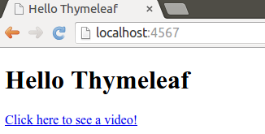
Palauta tehtävä TMC:lle kun olet valmis.
Tarkastellaan edellä toteutettua sivun palauttamista vielä tarkemmin.
get("/", (req, res) -> {
HashMap<String, Object> map = new HashMap<>();
return new ModelAndView(map, "sivu");
}, new ThymeleafTemplateEngine());
Ensimmäisellä rivillä kerromme, että juuripolkuun tulevat pyynnöt tulee käsitellä seuraavasti. Tätä seuraa pyynnön käsittelyyn liittyvä lohko, josta palautetaan olio, joka sisältää HashMap-olion sekä tiedon näytettävästä html-sivusta. Tämän jälkeen pyynnön käsittelyyn lisätään vielä erillinen olio, ThymeleafTemplateEngine, joka käsittelee html-sivun ennen sen palautusta.
Tässä oikeastaan tulee kaksi uutta ja mielenkiintoista asiaa.
HashMap on ohjelmoinnissa käytettävä lokerikko, missä jokaisella lokerolla on nimi, mihin arvon voi asettaa. Alla olevassa esimerkissä luomme ensin HashMap-olion, jonka jälkeen asetamme lokeroon nimeltä teksti arvon "Hei mualima!".
HashMap<String, Object> map = new HashMap<>();
map.put("teksti", "Hei mualima!");
Kun HashMap-olio palautetaan pyynnön käsittelyn jälkeen -- return new ModelAndView(map, "sivu"); -- annetaan lokerikko Thymeleafin käyttöön.
Sivun käsittely Thymeleafissa
Oletetaan, että käytössämme oleva sivu.html näyttää seuraavalta:
<!DOCTYPE html>
<html xmlns="http://www.w3.org/1999/xhtml" xmlns:th="http://www.thymeleaf.org">
<head>
<title>Otsikko</title>
</head>
<body>
<h1>Hei maailma!</h1>
<h2 th:text="${teksti}">testi</h2>
</body>
</html>
Kun Thymeleaf käsittelee HTML-sivun, se etsii sieltä elementtejä, joilla on th:-alkuisia attribuutteja. Ylläolevasta sivusta Thymeleaf löytää h2-elementin, jolla on attribuutti th:text -- <h2 th:text="${teksti}">testi</h2>. Attribuutti th:text kertoo Thymeleafille, että elementin tekstiarvo (testi) tulee korvata attribuutin arvon ilmaisemalla muuttujalla. Attribuutin th:text arvona on ${teksti}, jolloin Thymeleaf etsii HashMap-oliosta avaimella "teksti" arvoa.
Käytännössä Thymeleaf etsii siis HashMap-oliosta lokeron nimeltä teksti ja asettaa siinä olevan arvon h2-elementin tekstiarvoksi. Tässä tapauksessa teksti testi korvataan HashMap-olion lokerosta teksti löytyvällä arvolla, eli tekstillä Hei mualima!.
Hello Model
Tehtäväpohjan mukana tulevaan HTML-tiedostoon on toteutettu tarina, joka tarvitsee otsikon ja päähenkilön. Toteuta pakkauksessa wad.hellomodel sijaitsevaan HelloModel-luokkaan ohjelma, joka käsittelee juuripolkuun tulevia pyyntöjä ja käyttää pyynnössä tulevia parametreja tarinan täydentämiseen. Voit olettaa, että pyynnön mukana tulevien parametrien nimet ovat title ja person.
Lisää pyynnön mukana tulevien parametrien arvot Thymeleafille annettavaan HashMappiin. Otsikon avaimen tulee olla "title" ja henkilön avaimen tulee olla "person". Palautettava sivu on index.html.
Alla on esimerkki ohjelman toiminnasta, kun juuripolkuun tehdyssä pyynnössä on annettuna otsikko ja henkilö.
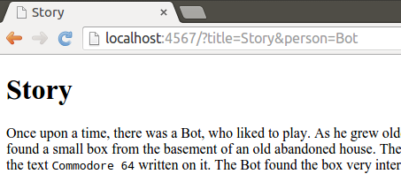
Palauta tehtävä TMC:lle kun olet valmis.
Tiedon lähettäminen palvelimelle
HTML-sivuille voi määritellä lomakkeita (form), joiden avulla käyttäjä voi lähettää tietoa palvelimelle. Lomakkeen määrittely tapahtuu form-elementin avulla, jolle kerrotaan polku, mihin lomake lähetetään (action), sekä pyynnön tyyppi (method). Pidämme pyynnön tyypin toistaiseksi GET-tyyppisenä.
Lomakkeeseen voidaan määritellä mm. tekstikenttiä (<input type="text"...) sekä painike, jolla lomake lähetetään (<input type="submit"...). Alla tekstikentän name-attribuutin arvoksi on asetettu nimi. Tämä tarkoittaa sitä, että kun lomakkeen tiedot lähetetään palvelimelle, tulee pyynnössä nimi-niminen parametri, jonka arvona on tekstikenttään kirjoitettu teksti.
<form action="/" method="GET">
<input type="text" name="nimi"/>
<input type="submit"/>
</form>
Hello Form
Tehtäväpohjassa on toiminnallisuus, jonka avulla sivulla voi näyttää tietoa, ja jonka avulla sivulta lähetetty tieto voidaan myös käsitellä. Tiedon lähettämiseen tarvitaan sivulle kuitenkin lomake.
Toteuta tehtäväpohjan kansiossa src/main/resources/templates olevaan index.html-tiedostoon lomake. Lomakkeessa tulee olla tekstikenttä, jonka nimen tulee olla content. Tämän lisäksi, lomakkeessa tulee olla myös nappi, jolla lomakkeen voi lähettää. Lomakkeen tiedot tulee lähettää juuriosoitteeseen GET-tyyppisellä pyynnöllä.
Kun sovellus toimii oikein, voit vaihtaa sivulla näkyvää otsikkoa lomakkeen avulla.
Listojen käsittely
Thymeleafille annettavalle HashMapille (ns. Model) voi asettaa tekstin lisäksi myös arvokokoelmia. Alla luomme "pääohjelmassa" listan, joka asetetaan Thymeleafin käsiteltäväksi menevään HashMap-olioon jokaisen juuripolkuun tehtävän pyynnön yhteydessä. Jos juuripolkuun lähetetään parametri nimeltä "content", lisätään se myös listaan.
List<String> lista = new ArrayList<>();
lista.add("Hello world!");
get("/", (req, res) -> {
HashMap<String, Object> data = new HashMap<>();
if (req.queryParams().contains("content")) {
list.add(req.queryParams("content"));
}
data.put("lista", list);
return new ModelAndView(data, "index");
}, new ThymeleafTemplateEngine());
Listan läpikäynti Thymeleafissa tapahtuu attribuutin th:each avulla. Sen määrittely saa muuttujan nimen, johon kokoelmasta otettava alkio kullakin iteraatiolla tallennetaan, sekä läpikäytävän kokoelman. Perussyntaksiltaan th:each on seuraavanlainen.
<pre>
<p th:each="alkio : ${lista}">
<span th:text="${alkio}">hello world!</span>
</p>
</pre>
Yllä käytämme attribuuttia nimeltä joukko ja tulostamme yksitellen sen sisältämät alkiot. Attribuutin th:each voi asettaa käytännössä mille tahansa toistettavalle elementille. Esimerkiksi listan voisi tehdä seuraavalla tavalla.
<ul>
<li th:each="alkio : ${lista}">
<span th:text="${alkio}">hello world!</span>
</li>
</ul>
Huom! Eräs klassinen virhe on määritellä iteroitava joukko merkkijonona th:each="alkio : joukko". Tämä ei luonnollisesti toimi.
Hello List
Tehtäväpohjassa on palvelinpuolen toiminnallisuus, jossa käsitellään juuripolkuun tuleva pyyntö, sekä lisätään lista Thymeleafille sivun käsittelyyn. Tehtäväpohjaan liittyvä html-sivu ei kuitenkaan sisällä juurikaan toiminnallisuutta.
Lisää html-sivulla (1) listalla olevien arvojen tulostaminen th:each-komennon avulla ja (2) lomake, jonka avulla palvelimelle voidaan lähettää uusia arvoja.
Alla on esimerkki ohjelman toiminnasta, kun sivulle on lisätty muutama rivi lomakkeen avulla. Viimeisimpänä on juuri lisätty teksti "Hello?".
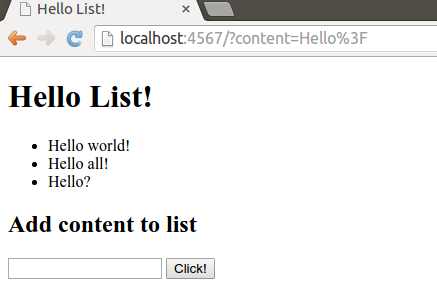
Notebook
Toteuta tehtäväpohjan pakkauksessa wad.notebook olevaan Notebook-luokkaan muistio-ohjelma, jolle voi lisätä muistiinpanoja. Tee ohjelmastasi sellainen, että jos muistiinpanoja on yli 10, se muistaa ja näyttää niistä vain viimeisimmät 10.
Alla on esimerkki muistiosta, kun siihen on lisätty 3 viestiä.

Pyynnön uudelleenohjaus ja POST
Olemme tähän mennessä toteuttaneet palvelinohjelmistoihimme vain kyvyn käsitellä GET-tyyppisiä pyyntöjä. GET-tyyppisiä pyyntöjä käytetään ensisijaisesti tiedon hakemiseen, eikä niitä oikeastaan pitäisi käyttää lainkaan tiedon muuttamiseen. Toinen tapa lähettää tietoa palvelimelle on POST-tyyppiset pyynnöt, joita käytettäessä pyynnön parametrit kulkevat pyynnön rungossa -- palaamme tähän myöhemmin kurssilla.
Oikeastaan kaikki pyynnöt, joissa lähetetään tietoa palvelimelle, ovat ongelmallisia jos pyynnön vastauksena palautetaan näytettävä sivu. Tällöin käyttäjä voi sivun uudelleenlatauksen (esim. painamalla F5) yhteydessä lähettää aiemmin lähettämänsä datan vahingossa uudelleen. Kokeile tätä jossain aiemmassa tehtävässä kun olet lähettänyt lomakkeella tietoa!
On tyylikkäämpää toteuttaa lomakkeen dataa vastaanottava toiminnallisuus siten, että lähetetyn tiedon käsittelyn jälkeen käyttäjälle palautetaan vastauksena uudelleenohjauspyyntö. Tämän jälkeen käyttäjän selain tekee uuden pyynnön uudelleenohjauspyynnön mukana annettuun osoitteeseen. Tätä toteutustapaa kutsutaan Post/Redirect/Get-suunnittelumalliksi ja sillä mm. estetään lomakkeiden uudelleenlähetys, jonka lisäksi vähennetään toiminnallisuuden toisteisuutta.
Alla on toteutettu POST-tyyppistä pyyntöä kuunteleva polku sekä siihen liittyvä toiminnallisuus. Komennolla res.redirect("/"); kerrotaan, että pyynnölle tulee lähettää vastauksena uudelleenohjauspyyntö polkuun "/". Kun selain vastaanottaa uudelleenohjauspyynnön, tekee se GET-tyyppisen pyynnön uudelleenohjauspyynnössä annettuun osoitteeseen.
post("/", (req, res) -> {
res.redirect("/");
return "";
});
Hello POST/Redirect/GET
Tehtäväpohjassa on sekä muistilappujen listaamistoiminnallisuus, että lomake, jonka avulla voidaan lähettää POST-tyyppisiä pyyntöjä palvelimelle. Toteuta sovellukseen toiminnallisuus, missä palvelin kuuntelee POST-tyyppisiä pyyntöjä, lisää pyynnön yhteydessä tulevan tiedon sovelluksessa olevaan listaan ja uudelleenohjaa käyttäjän tekemään GET-tyyppisen pyynnön juuriosoitteeseen.
Olioita kaikkialla!
Thymeleafille annettavaan HashMap-olioon voi hyvin lisätä myös olioita. Oletetaan, että käytössämme on henkilöä kuvaava luokka.
public class Henkilo {
private String nimi;
public Henkilo(String nimi) {
this.nimi = nimi;
}
public String getNimi() {
return this.nimi;
}
public void setNimi(String nimi) {
this.nimi = nimi;
}
}
Henkilö-olion lisääminen HashMap-olioon on suoraviivaista:
get("/", (req, res) -> {
HashMap<String, Object> data = new HashMap<>();
data.put("henkilo", new Henkilo("Le Pigeon"));
return new ModelAndView(data, "index");
}, new ThymeleafTemplateEngine());
Kun sivua luodaan, henkilöön päästään käsiksi HashMap-olioon asetetun avaimen perusteella. Edellä luotu "Le Pigeon"-henkilö on HashMapissa tallessa avaimella "henkilo". Kuten aiemminkin, avaimella pääsee olioon käsiksi.
<h2 th:text="${henkilo}">Henkilön nimi</h2>
Ylläolevaa Henkilön tulostusta kokeillessamme saamme näkyville (esim.) merkkijonon Henkilo@29453f44 -- ei ihan mitä toivoimme. Käytännössä Thymeleaf kutsuu edellisessä tapauksessa olioon liittyvää toString-metodia, jota emme ole määritelleet. Pääsemme oliomuuttujiin käsiksi olemassaolevien getMuuttuja-metodien kautta. Jos haluamme tulostaa Henkilö-olioon liittyvän nimen, kutsumme metodia getNimi. Thymeleafin käyttämässä notaatiossa kutsu muuntuu muotoon henkilo.nimi. Saamme siis halutun tulostuksen seuraavalla tavalla:
<h2 th:text="${henkilo.nimi}">Henkilön nimi</h2>
Olioita listalla
Listan läpikäynti Thymeleafissa tapahtuu attribuutin th:each avulla. Sen määrittely saa muuttujan nimen, johon kokoelmasta otettava alkio kullakin iteraatiolla tallennetaan, sekä läpikäytävän kokoelman. Perussyntaksiltaan th:each on jo tullut aiemmin tutuksi.
<pre>
<p th:each="alkio : ${lista}">
<span th:text="${alkio}">hello world!</span>
</p>
</pre>
Iteroitavan joukon alkioiden ominaisuuksiin pääsee käsiksi aivan samalla tavalla kuin muiden olioiden ominaisuuksiin. Tutkitaan seuraavaa esimerkkiä, jossa listaan lisätään kaksi henkilöä, lista lisätään pyyntöön ja lopulta luodaan näkymä Thymeleafin avulla.
List<Henkilo> henkilot = new ArrayList<>();
henkilot.add(new Person("James Gosling"));
henkilot.add(new Person("Martin Odersky"));
get("/", (req, res) -> {
HashMap<String, Object> data = new HashMap<>();
data.put("list", henkilot);
return new ModelAndView(data, "index");
}, new ThymeleafTemplateEngine());
<p>Ja huomenna puheet pitävät:</p>
<ol>
<li th:each="henkilo : ${list}">
<span th:text="${henkilo.nimi}">Esimerkkihenkilo</span>
</li>
</ol>
Käyttäjälle lähetettävä sivu näyttää palvelimella tapahtuneen prosessoinnin jälkeen seuraavalta.
<p>Ja huomenna puheet pitävät:</p>
<ol>
<li><span>James Gosling</span></li>
<li><span>Martin Odersky</span></li>
</ol>
Hello Objects
Tehtäväpohjassa on sovellus, jossa käsitellään Item-tyyppisiä olioita. Tehtävänäsi on lisätä sovellukseen lisätoiminnallisuutta:
- Kun käyttäjä avaa sovelluksen, tulee hänen lomakkeen lisäksi nähdä lista esineistä. Jokaisesta esineestä tulee tulla ilmi sen nimi (name) ja tyyppi (type).
- Kun käyttäjä lähettää lomakkeella uuden esineen palvelimelle, tulee palvelimen säilöä esine listalle seuraavaa näyttämistä varten. Huomaa, että lomake lähettää tiedot POST-pyynnöllä sovelluksen juureen. Kun esine on säilötty, uudelleenohjaa käyttäjän pyyntö siten, että käyttäjän selain tekee GET-tyyppisen pyynnön sovelluksen juuripolkuun.
Allaolevassa esimerkissä sovellukseen on lisätty olemassaolevan taikurin hatun lisäksi Party hat, eli bilehattu.
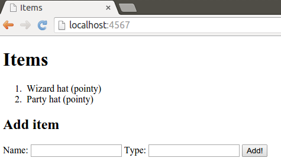
Polkumuuttujat
Polkuja käytetään erilaisten resurssien tunnistamiseen ja yksilöintiin. Usein kuitenkin vastaan tulee tilanne, missä luodut resurssit ovat uniikkeja, emmekä niiden tietoja ennen sovelluksen käynnistymistä. Jos haluaisimme näyttää tietyn resurssin tiedot, voisimme lisätä pyyntöön parametrin, minkä arvo olisi haetun resurssin tunnus.
Toinen vaihtoehto on ajatella polkua haettavan resurssin tunnistajana. Sparkin avulla polun voi määritellä parametriksi kaksoispisteen avulla -- esimerkiksi polku "/:arvo" ottaisi vastaan minkä tahansa juuripolun alle tulevan kyselyn ja tallentaisi polun arvon myöhempää käyttöä varten. Tällöin jos käyttäjä tekee pyynnön osoitteeseen http://localhost:4567/kirja, löytyy arvo "kirja" muuttujasta req.params(":arvo").
Yksittäisen henkilön näyttäminen onnistuisi esimerkiksi seuravavasti:
Map<Integer, Henkilo> henkilot = new HashMap<>();
henkilot.put(1, new Person("James Gosling"));
henkilot.add(2, new Person("Martin Odersky"));
get("/:id", (req, res) -> {
HashMap<String, Object> data = new HashMap<>();
data.put("henkilo", henkilot.get(Integer.parseInt(req.params(":id"))));
return new ModelAndView(data, "index");
}, new ThymeleafTemplateEngine());
Hello Path Variables
Tehtäväpohjassa on sovellus, jossa käsitellään taas edellisestä tehtävästä tuttuja Item-tyyppisiä olioita. Tällä kertaa esineet kuitenkin kuvastavat hattuja. Kun sovelluksen juureen tehdään pyyntö, käyttäjälle näytetään oletushattu ("default"). Lisää sovellukseen toiminnallisuus, minkä avulla tiettyyn polkuun tehtävä kysely palauttaa sivun, jossa näkyy tietyn hatun tiedot.
Sovelluksen juuripolkuun tehtävä pyyntö näyttää seuraavanlaisen sivun:
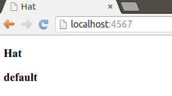
Muihin osoitteisiin tehtävät pyynnöt taas palauttavat tehtäväpohjassa olevasta items-hajautustaulusta polkuun sopivan hatun. Esimerkiksi pyyntö polkuun /ascot näyttää seuraavanlaisen sivun:
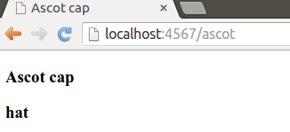
Hello Individual Pages
Edellisessä tehtävässä käytössämme oli vain yksi sivu. Olisi kuitenkin hienoa, jos jokaiselle hatulle olisi oma sivu -- ainakin sovelluksen käyttäjän näkökulmasta.
Tehtäväpohjassa on valmiina sovellus, joka listaa olemassaolevat hatut ja näyttää ne käyttäjälle. Jokaisen hatun yhteydessä on linkki, jota klikkaamalla pitäisi päästä hatun omalle sivulle.
Toteuta sekä html-sivu (single.html), että sopiva metodi, joka ohjaa pyynnön sivulle.
Pyyntö sovelluksen juureen luo seuraavanlaisen sivun.
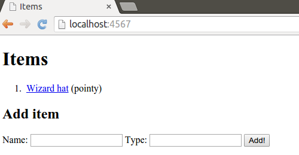
Jos sivulta klikkaa hattua, pääsee tietyn hatun tiedot sisältävälle sivulle. Alla olevassa esimerkissä on klikattu taikurin hattuun liittyvää linkkiä.
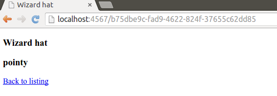
Todo Application
Tässä tehtävässä tulee rakentaa tehtävien hallintaan tarkoitettu sovellus. Sovelluksen käyttämät sivut ovat valmiina näkyvissä, itse sovelluksen pääset toteuttamaan itse.
Sovelluksen tulee sisältää seuraavat toiminnallisuudet:
- Kaikkien tehtävien listaaminen. Kun käyttäjä tekee pyynnön sovelluksen juuripolkuun, tulee hänelle näyttää sivu, missä tehtävät on listattuna. Sivulla on myös lomake tehtävien lisäämiseen.
- Yksittäisen tehtävän lisääminen. Kun käyttäjä täyttää lomakkeen sivulla ja lähettää tiedot palvelimelle, tulee sovelluksen lisätä tehtävä näytettävään listaan.
- Yksittäisen tehtävän poistaminen. Kun käyttäjä painaa tehtävään liittyvää
Done!-nappia, tulee tehtävä poistaa listalta. - Yksittäisen tehtävän näyttäminen. Kun käyttäjä klikkaa tehtävään liittyvää linkkiä, tulee käyttäjälle näyttää tehtäväsivu. Huom! Tehtävään liittyvien tarkistusten määrä tulee kasvaa aina yhdellä kun sivulla vieraillaan.
Alla kuva tehtävien listauksesta:
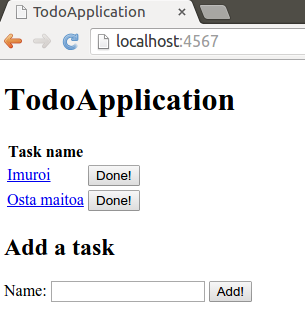
Kun tehtävää klikkaa, näytetään erillinen tehtäväsivu:
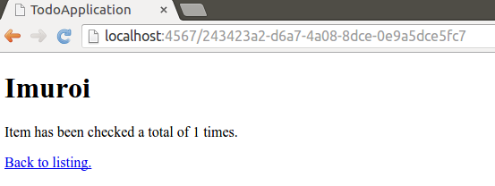
Kun sivu avataan toisen kerran, kasvaa tehtävien tarkistukseen liittyvä laskuri:
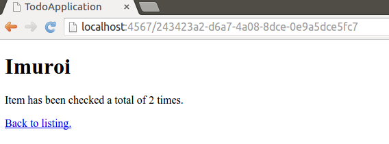
Tyylitiedostot
Olet ehkäpä huomannut, että tähän mennessä tekemämme web-sovellukset eivät ole kovin kaunista katsottavaa. Kurssilla pääpaino on palvelinpään toiminnallisuuden toteuttamisessa, joten emme jatkossakaan keskity sivustojen ulkoasuun. Sivujen ulkoasun muokkaaminen on kuitenkin melko suoraviivaista. Verkosta löytyy iso kasa oppaita sivun ulkoasun määrittelyyn -- tässä yksi.
Käytämme kurssilla muutamassa tehtävässä valmista Twitter Bootstrap -kirjastoa ulkoasun määrittelyyn. Ulkoasun määrittely tapahtuu lisäämällä sivun head-osioon oleelliset kirjastot -- tässä kirjastot haetaan https://www.bootstrapcdn.com/-palvelusta, joka tarjoaa kirjastojen ylläpito- ja latauspalvelun.
Alla on esimerkki HTML-sivusta, jossa Twitter Bootstrap on otettu käyttöön. Sivulla on lisäksi määritelty body-elementin luokaksi (class) "container", mikä tekee sivusta päätelaitteen leveyteen reagoivan. Elementillä table oleva luokka "table" lisää elementtiin tyylittelyn. Erilaisiin Twitter Bootstrapin tyyleihin voi tutustua tarkemmin täällä.
<!DOCTYPE html>
<html xmlns="http://www.w3.org/1999/xhtml" xmlns:th="http://www.thymeleaf.org">
<head>
<title>Blank</title>
<link rel="stylesheet" href="https://maxcdn.bootstrapcdn.com/bootstrap/3.3.5/css/bootstrap.min.css"/>
<link rel="stylesheet" href="https://maxcdn.bootstrapcdn.com/bootstrap/3.3.5/css/bootstrap-theme.min.css"/>
<script src="https://maxcdn.bootstrapcdn.com/bootstrap/3.3.5/js/bootstrap.min.js"></script>
</head>
<body class="container">
<table class="table">
<tr>
<th>An</th>
<th>important</th>
<th>header</th>
</tr>
<tr>
<td>More</td>
<td>important</td>
<td>text</td>
</tr>
<tr>
<td>More</td>
<td>important</td>
<td>text</td>
</tr>
<tr>
<td>More</td>
<td>important</td>
<td>text</td>
</tr>
<tr>
<td>More</td>
<td>important</td>
<td>text</td>
</tr>
</table>
</body>
</html>
Hello CSS
Tässä tehtävässä tavoitteena on lähinnä kokeilla sovelluksessa olevaa sivua ilman tyylitiedostoja sekä tyylitiedostojen kanssa. Käynnistä palvelin ja katso miltä juuripolussa toimiva sovellus näyttää.
Sammuta tämän jälkeen palvelin ja muokkaa sovellukseen liittyvää index.html-tiedostoa siten, että poistat kommenttimerkit head-elementissä olevien Twitter Bootstrap -kirjaston linkkien ympäriltä. Käynnistä tämän jälkeen palvelin uudestaan ja katso miltä sivu tämän jälkeen näyttää. Oleellista tässä on se, että sivun ulkoasun muuttamiseen tarvittiin käytännössä vain tyylitiedostojen lisääminen.
Tehtävässä ei ole testejä -- voit palauttaa sen kun olet kokeillut ylläolevaa muutosta.
Tiedon tallentaminen
Sovelluksemme -- vaikka huikeita ovatkin -- ovat melko alkeellisia, sillä sovelluksissa käsiteltävää tietoa ei tallenneta mihinkään. Esimerkiksi lomakkeen avulla sovellukselle lähetettävä data katoaa kun sovellus käynnistetään uudestaan. Tämä ei ole kivaa.
Web-sovelluksissa hyödynnetään tyypillisesti sovelluksesta erillisiä tietokantaohjelmistoja, joihin tehdään kyselyjä tarvittaessa. Tutustutaan tässä pikaisesti erääseen verkossa toimivaan tietokantatoiminnallisuutta tarjoavaan palveluun, Firebaseen. Firebase tarjoaa sovelluskehittäjille ilmaisen paikan tiedon tallentamiseen sovelluksen kehitysvaiheessa. Firebasen oleelliset kirjastot saa projektin käyttöön kun lisää pom.xml -tiedostoon seuraavan riippuvuuden.
<dependency>
<groupId>com.firebase</groupId>
<artifactId>firebase-client-jvm</artifactId>
<version>2.4.0</version>
</dependency>
Firebaseen tallennettavat resurssit liittyvät aina tiettyyn osoitteeseen sekä osoitteen alla olevaan polkuun. Kurssin johdanto-osion viimeisessä tehtävässä on valmiiksi toteutettuna luokka, jonka avulla Firebaseen voi tehdä kyselyitä -- hauskaa tutustumista!
Hello Firebase
Tässä tehtävässä on valmiiksi toteutettuna esineiden tallentaminen ja noutaminen Firebase-palvelusta. Tutustu ensin sovelluksen toimintaan ja kokeile tiedon hakemista ja tallentamista. Huomaat myös, että tieto ei katoa, vaikka käynnistät palvelinohjelmiston uudestaan.
Toteuta tehtävässä toiminnallisuus esineiden poistamiseen ja muokkaamiseen. Poistamisen tulee poistaa esine Firebase-palvelusta (luokassa FirebaseService on valmis toiminnallisuus tähän) ja muokkaamisen tulee avata uusi sivu, jossa esineen nimeä voi muuttaa. Voit tehdä konkreettisen muokkaustoiminnallisuuden vaikkapa siten, että poistat vanhan esineen muokkauksen yhteydessä ja lisäät uuden esineen vanhaan esineeseen liittyvillä muokatuilla tiedoilla.
Tehtävässä ei ole testejä ja palauttaessasi tehtävän palvelimelle kerrot tehneesi sen valmiiksi. Testit on jätetty tästä pois, jotta voit luoda oman Firebase-palvelun ja käyttää myös sitä.
Huom! Jos Firebasea käytettäessä ohjelma heittää virheen "NullPointerException", muokkaa FirebaseService-luokan metodit add ja list seuraavanlaisiksi:
public void add(FirebaseItem item) {
if (item == null || item.getName() == null || item.getIdentifier() == null) {
return;
}
new Firebase(this.url).child(item.getIdentifier()).setValue(item);
this.items.put(item.getIdentifier(), item);
}
public List<FirebaseItem> list() {
return this.items.values().stream()
.filter(o -> o.getName() != null)
.sorted((o1, o2) -> o1.getName().compareTo(o2.getName()))
.collect(Collectors.toList());
}
Osa 2
Osa 1, kertaus
Jokainen uusi osio alkaa edellisen viikon teemoja sisältävällä kertaustehtävällä. Kertaustehtävä tulee näkyville kun teet vähintään 75% edellisen osion tehtävistä. Kun saat kertaustehtävän tehtyä, uuden osion tehtävät tulevat saataville TMC-palvelussa.
Ensimmäisessä kertaustehtävässä tehtävänäsi on toteuttaa sovellus työlistan hallintaan. Työlistalla näkyy korkeintaan viisi viimeksi lisättyä työtä, joista jokaisen voi merkitä halutessaan tehdyksi "Done!" -nappia painamalla.
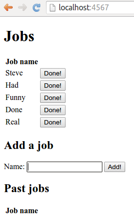Kun työ merkitään tehdyksi, siirretään se erilliseen aiempia töitä listaavaan tauluun.
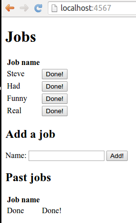Jos työlistalla on liikaa töitä, vanhin työ siirretään aina erilliseen aiempia töitä listaavaan tauluun.
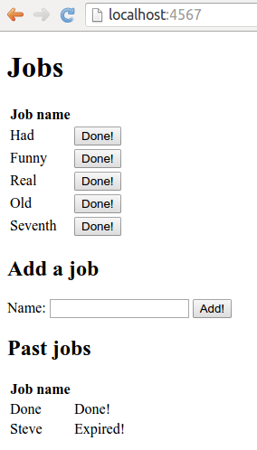Aiempia töitä listaava taulu näyttää onnistuneesti tehtyjen tehtävien vieressä tekstin "Done!", kun taas vanhentuneiden tehtävien vieressä näytetään teksti "Expired!".
Tehtäväpohjassa on annettu valmiina käyttöliittymän HTML-koodi, mistä voi tarkastella myös haluttua toiminnallisuutta.
Internetin toiminta
"I just had to take the hypertext idea and connect it to the TCP and DNS ideas and – ta-da! – the World Wide Web." -- Tim Berners-Lee
Internetin peruskomponentit ovat (1) URI (Uniform Resource Identifier) ja DNS (Domain Name Services), jotka mahdollistavat palveluiden, palvelinohjelmistojen ja resurssien yksilöinnin, (2) HTTP (HyperText Transfer Protocol), joka on sovittu tapa viestien lähetykseen verkon yli, sekä (3) HTML (HyperText Markup Language), joka on yhteinen dokumenttien esityskieli.
URI ja DNS
"The most important thing that was new was the idea of URI-or URL, that any piece of information anywhere should have an identifier, which will allow you to get hold of it." -- Tim Berners-Lee
Verkossa sijaitseva resurssi tunnistetaan osoitteen perusteella. Osoite (URI eli Uniform Resource Identifier, myös terminä käyttöön jäänyt URL Uniform Resource Locator) koostuu resurssin nimestä ja sijainnista, joiden perusteella haluttu resurssi ja palvelin (sijainti) voidaan löytää verkossa olevien koneiden massasta.
Kun käyttäjä kirjoittaa web-selaimen osoitekenttään osoitteen ja painaa enteriä, web-selain tekee kyselyn annettuun osoitteeseen. Koska tekstimuotoiset osoitteet ovat käytännössä vain ihmisiä varten, kääntää selain ensiksi halutun osoitteen numeeriseksi IP-osoitteeksi. Jos IP-osoite on jo käytössä olevan tietokoneen tiedossa esimerkiksi aiemmin osoitteeseen tehdyn kyselyjen takia, selain voi ottaa yhteyden IP-osoitteeseen. Jos IP-osoite taas ei ole tiedossa, tekee selain ensin kyselyn DNS-palvelimelle (Domain Name System), jonka tehtävänä on muuntaa tekstuaaliset osoitteet IP-osoitteiksi (esim. Tietojenkäsittelytieteen laitoksen kotisivu http://www.cs.helsinki.fi on IP-osoitteessa 128.214.166.78). Ilman DNS-palvelimia ihmisten tulisi muistaa IP-osoitteet ulkoa.
IP-osoitteet yksilöivät tietokoneet ja mahdollistavat koneiden löytämisen verkon yli. Käytännössä yhteys IP-osoitteen määrittelemään koneeseen avataan sovelluskerroksen HTTP-protokollan avulla kuljetuskerroksen TCP-protokollan yli. TCP-protokollan tehtävänä on varmistaa, että viestit pääsevät perille. Lisää tietoa konkreettisesta tietoliikenteestä kurssilla Tietoliikenteen perusteet.
Käytännössä URIt näyttävät seuraavilta:
protokolla://isäntäkone[:portti]/polku/../[kohdedokumentti[.paate]][?parametri=arvo&toinen=arvo][#ankkuri]
- protokolla: kyselyssä käytettävä protokolla, esimerkiksi HTTP, FTP tai SSH.
- isäntäkone: kone tai palvelin johon luodaan yhteys. Voi olla joko IP-osoite tai tekstuaalinen kuvaus (esim www.cs.helsinki.fi).
- portti: portti isäntäkoneella johon yhteys luodaan. HTTP-palvelimien oletusportti on 80. Jos palvelin käyttää eri porttinumeroa kuin 80, tulee se merkitä osoitteeseen. Portti käytännössä määrittelee prosessin eli sovelluksen, johon yritetään ottaa yhteyttä.
- polku: periaatteessa polku resurssiin palvelimella. Käytännössä (nykyään) myös palvelun osoite, johon palvelin osaa osoittaa. Usein palvelut toimivat erillisessä koneessa sisäverkossa, ja ulkoverkkoon näkyvä kone vain toimii ohjaajana eli proxynä oikeaan palveluun.
- kohdedokumentti: haettava resurssi, jos kohdedokumenttia ei ole määritelty palvelin päättelee oletusdokumentin. Usein index.html
- .paate: resurssiin liittyvä tiedostotyyppi, ei pakollinen. Esimerkiksi .html
- kyselyparametrit: koostuu avain-arvo -pareista, joiden avulla palvelimelle pystyy toteuttamaan lisätoiminnallisuutta. Kuhunkin avaimeen liittyvä arvo esitetään = -merkillä, avain-arvo -parit erotetaan toisistaan &-merkillä.
- ankkuri: kertoo mihin kohtaan dokumentissa tulee mennä.
HTTP
HTTP (HyperText Transfer Protocol) on TCP/IP -protokollapinon sovellustason protokolla, jota web-palvelimet ja selaimet käyttävät kommunikointiin. HTTP-protokolla perustuu asiakas-palvelin malliin, jossa jokaista pyyntöä kohden on yksi vastaus (request-response paradigm). Tämä tarkoittaa muunmuassa sitä, että HTTP-protokolla ei automaattisesti osaa yhdistää saman käyttäjän kahta peräkkäistä pyyntöä toisiinsa.
Käytännössä HTTP-asiakasohjelma (jatkossa selain) lähettää HTTP-viestin HTTP-palvelimelle (jatkossa palvelin), joka palauttaa HTTP-vastauksen. HTTP-protokollan versio 1.1 on määritelty RFC 2616-spesifikaatiossa.
Asiakas-palvelin malli
Asiakas-palvelin -mallissa (Client-Server model) asiakkaat käyttävät palvelimen tarjoamia palveluja. Kommunikointi asiakkaan ja palvelimen välillä tapahtuu usein verkon yli siten, että selain ja palvelin sijaitsevat erillisissä fyysisissä sijainneissa (eri tietokoneilla). Palvelin tarjoaa yhden tai useamman palvelun, joita käyttäjä käyttää selaimen kautta.
Käytännössä selain näyttää käyttöliittymän ohjelmiston käyttäjälle. Selaimen käyttäjän ei tarvitse tietää, että kaikki käytetty tieto ei ole hänen koneella. Käyttäjän tehdessä toiminnon selain pyytää tarpeen vaatiessa palvelimelta käyttäjän tarpeeseen liittyvää lisätietoa. Tyypillistä mallille on se, että palvelin tarjoaa vain asiakkaan pyytämät tiedot ja verkossa liikkuvan tiedon määrä pidetään vähäisenä.
Asiakas-palvelin -malli mahdollistaa hajautetut ohjelmistot: selainta käyttävät loppukäyttäjät voivat sijaita eri puolilla maapalloa palvelimen sijaitessa tietyssä paikassa.
Haasteena perinteisessä asiakas-palvelin mallissa on se, että palvelin sijaitsee yleensä tietyssä keskitetyssä sijainnissa. Keskitetyillä palveluilla on mahdollisuus ylikuormittua asiakasmäärän kasvaessa. Kapasiteettia rajoittavat muun muassa palvelimen fyysinen kapasiteetti (rauta), palvelimeen yhteydessä olevan verkon laatu ja nopeus, sekä tarjotun palvelun tyyppi. Esimerkiksi pyynnöt, jotka johtavat tiedon tallentamiseen, vievät tyypillisesti enemmän resursseja kuin pyynnöt, jotka tarvitsevat vain staattista sisältöä.
Knock Knock
Lähes kaikki sovellusten verkkoliikenne sovellustason protokollasta riippumatta käyttää TCP-yhteyksiä ja -portteja kommunikointiin. TCP-yhteyksiä käytetään Javassa Socket- ja ServerSocket-luokkien avulla. Lisää aiheesta löytyy tästä oppaasta.
Eräs suosittu viestiprotokolla (eli säännöstö, joka kertoo kuinka kommunikoinnin tulee kulkea) alkaa sanoilla Knock knock!. Toinen osapuoli vastaa tähän Who's there?. Ensimmäinen osapuoli vastaa jotain, esim. Moustache, jonka jälkeen toisen osapuolen tulee vastata Moustache who?. Tähän ensimmäinen osapuoli vastaa viestillä joka päättyy "Bye.".
Server: Knock knock! Client: Who's there? Server: Moustache Client: Moustache who? Server: I Moustache you a question, but I'm shaving it for later! Bye.
Tehtäväpohjan mukana tulee projekti, on toteutettu valmiiksi palvelinpuolen toiminnallisuus luokassa KnockKnockServer. Palvelinohjelmisto kuuntelee pyyntöä portissa 12345.
Tehtävänäsi on toteuttaa valmiiksi toteutettua palvelinkomponenttia varten asiakaspuolen toiminnallisuus, eli sovellus, joka tekee kyselyjä palvelimelle. Asiakaspuolen toiminnallisuutta varten on jo olemassa allaoleva runko, joka tulee tehtäväpohjan pakkauksessa wad.knockknock.client olevassa luokassa KnockKnockClient.
Täydennä asiakasohjelmisto annettujen askelten mukaan siten, että sitä voi käyttää kommunikointiin viestiprotokollapalvelimen kanssa.
// Luodaan yhteys palvelimelle
Socket socket = new Socket("localhost", port);
Scanner serverMessageScanner = new Scanner(socket.getInputStream());
PrintWriter clientMessageWriter = new PrintWriter(
socket.getOutputStream(), true);
Scanner userInputScanner = new Scanner(System.in);
// Luetaan viestejä palvelimelta
while (serverMessageScanner.hasNextLine()) {
// 1. lue viesti palvelimelta
// 2. tulosta palvelimen viesti standarditulostusvirtaan näkyville
// 3. jos palvelimen viesti loppuu merkkijonon "Bye.", poistu toistolausekkeesta
// 4. pyydä käyttäjältä palvelimelle lähetettävää viestiä
// 5. kirjoita lähetettävä viesti palvelimelle. Huom! Käytä println-metodia.
}
Kirjoita asiakasohjelmiston lähdekoodi KnockKnockClient-luokan start-metodiin. Kun olet saanut ohjelmiston valmiiksi, suorita ohjelma, jotta voit kokeilla sitä. Tehtäväpohjan mukana on ohjelman käynnistävä main-metodin sisältävä luokka valmiina. Tulostuksen pitäisi olla esimerkiksi seuraavanlainen (käyttäjän syöttämät tekstit on merkitty punaisella):
Server: Knock knock! Type a message to be sent to the server: Who's there? Server: Lettuce Type a message to be sent to the server: Lettuce who? Server: Lettuce in! it's cold out here! Bye.
Jos asiakasohjelmisto lähettää virheellisiä viestejä, reagoi palvelin siihen seuraavasti:
Server: Knock knock! Type a message to be sent to the server: What? Server: You are supposed to ask: "Who's there?" Type a message to be sent to the server: Who's there? Server: Lettuce Type a message to be sent to the server: huh Server: You are supposed to ask: "Lettuce who?" Type a message to be sent to the server: Lettuce who? Server: Lettuce in! it's cold out here! Bye.
Kun olet saanut asiakaspuolen toiminnallisuuden toimimaan, palauta tehtävä TMC:lle.
Edellisessä tehtävässä toteutettu asiakasohjelmisto voisi aivan yhtä hyvin tehdä kyselyitä web-palvelimelle, mutta tällöin käytetty viestiprotokolla on hieman erilainen. Tutustutaan seuraavaksi HTTP-protokollaan, eli selainten ja palvelinten väliseen kommunikaatioon käytettyyn kommunikaatiotyyliin.
HTTP-viestin rakenne: palvelimelle lähetettävä kysely
HTTP-protokollan yli lähetettävät viestit ovat tekstimuotoisia. Viestit koostuvat riveistä jotka muodostavat otsakkeen, sekä riveistä jotka muodostavat viestin rungon. Viestin runkoa ei ole pakko olla olemassa -- joskus palautetaan esimerkiksi vain uudelleenohjauskomento. Viestin loppuminen ilmoitetaan kahdella peräkkäisellä rivinvaihdolla.
Palvelimelle lähetettävän viestin, eli kyselyn, ensimmäisellä rivillä on pyyntötapa, halutun resurssin polku ja HTTP-protokollan versionumero.
PYYNTÖTAPA /POLKU_HALUTTUUN_RESURSSIIN HTTP/versio otsake-1: arvo otsake-2: arvo valinnainen viestin runko
Pyyntötapa ilmaisee HTTP-protokollassa käytettävän pyynnön tavan (esim. GET tai POST), polku haluttuun resurssiin kertoo haettavan resurssin sijainnin palvelimella (esim. /index.html), ja HTTP-versio kertoo käytettävän version (esim. HTTP/1.0). Alla esimerkki hyvin yksinkertaisesta -- joskin yleisestä -- pyynnöstä. Huomaa että yhteys palvelimeen on jo muodostettu, eli palvelimen osoitetta ei merkitä erikseen.
GET /index.html HTTP/1.0
Yksittäisen palvelimen käyttäminen vain yhden sivuston web-palvelimena jättää helposti huomattavan osan tietokoneen kapasiteetista käyttämättä. Nykyään yleisesti käytössä oleva HTTP/1.1 -protokolla mahdollistaa useamman palvelimen pitämisen samassa IP-osoitteessa virtuaalipalvelintekniikan avulla. Tällöin yksittäiset palvelinkoneet voivat sisältää useita palvelimia. Käytännössä IP-osoitetta kuunteleva kone voi joko itsessään sisältää useita ohjelmistoilla emuloituja palvelimia, tai se voi toimia reitittimenä ja ohjata pyynnön tietylle esimerkiksi yrityksen sisäverkossa sijaitsevalle koneelle. Kun yksittäinen IP-osoite voi sisältää useampia palvelimia, pelkkä polku haluttuun resurssiin ei riitä oikean resurssin löytämiseen: resurssi voisi olla millä tahansa koneeseen liittyvällä virtuaalipalvelimella. HTTP/1.1 -protokollassa on pyynnöissä pakko olla mukana käytetyn palvelimen osoitteen kertova Host-otsake.
GET /index.html HTTP/1.1 Host: www.munpalvelin.net
Yhteyden muodostaminen palvelimelle Java-maailmassa
Java-maailmassa yhteys toiselle koneelle muodostetaan Socket-luokan avulla. Kun yhteys on muodostettu, toiselle koneelle lähetettävä viesti kirjoitetaan socketin tarjoamaan OutputStream-rajapintaan. Tämän jälkeen luetaan vastaus socketin tarjoaman InputStream-rajapinnan kautta.
import java.io.PrintWriter;
import java.net.InetAddress;
import java.net.Socket;
import java.util.Scanner;
public class Main {
public static void main(String[] args) throws Exception {
// Connect to the Web server at an address
String address = "www.helsinki.fi";
// InetAddress.getByName retrieves an IP for the address
Socket socket = new Socket(InetAddress.getByName(address), 80);
// Send a HTTP-request to the server that we are connected to
PrintWriter writer = new PrintWriter(socket.getOutputStream());
writer.println("GET / HTTP/1.1");
writer.println("Host: " + address);
writer.println();
writer.flush();
// Read the response
Scanner reader = new Scanner(socket.getInputStream());
while (reader.hasNextLine()) {
System.out.println(reader.nextLine());
}
}
}
Hello Browser!
Vaikkei kyseessä olekaan selainohjelmointikurssi, on jokaisen hyvä toteuttaa selainohjelmiston ensimmäiset askeleet. Toteuta tehtäväpohjassa olevan HelloBrowser-luokan main-metodiin ohjelma, joka kysyy käyttäjältä sivun osoitetta, tekee syötetyn sivun juureen ("/") pyynnön, ja tulostaa käyttäjälle vastauksen.
Alla on esimerkkituloste, missä käyttäjän syöte on annettu punaisella.
================ THE INTERNETS! ================ Where to? www.google.com ========== RESPONSE ========== HTTP/1.1 302 Found Cache-Control: private Content-Type: text/html; charset=UTF-8 Location: http://www.google.fi/?gfe_rd=cr&ei=Q5dgVu7zDqOr8wer_4OoCA Content-Length: 256 Date: Mon, 30 Nov 2015 18:56:00 GMT Server: GFE/2.0 <HTML><HEAD><meta http-equiv="content-type" content="text/html;charset=utf-8"> <TITLE>302 Moved</TITLE></HEAD><BODY> <H1>302 Moved</H1> The document has moved <A HREF="http://www.google.fi/?gfe_rd=cr&ei=Q5dgVu7zDqOr8wer_4OoCA">here</A>. </BODY></HTML>
HTTP-viestin rakenne: palvelimelta saapuva vastaus
Palvelimelle tehtyyn pyyntöön saadaan aina jonkinlainen vastaus. Jos tekstimuotoiseen osoitteeseen ei ole liitetty IP-osoitetta DNS-palvelimilla, selain ilmoittaa ettei palvelinta löydy. Jos palvelin löytyy, ja pyyntö saadaan tehtyä palvelimelle asti, tulee palvelimen myös vastata jollain tavalla.
Palvelimelta saatavan vastauksen sisältö on seuraavanlainen. Ensimmäisellä rivillä HTTP-protokollan versio, viestiin liittyvä statuskoodi, sekä statuskoodin selvennys. Tämän jälkeen on joukko otsakkeita, tyhjä rivi, ja mahdollinen vastausrunko. Vastausrunko ei ole pakollinen.
HTTP/versio statuskoodi selvennys
otsake-1: arvo
otsake-2: arvo
valinnainen vastauksen runko
Esimerkiksi:
HTTP/1.1 200 OK Date: Mon, 01 Sep 2014 03:12:45 GMT Server: Apache/2.2.14 (Ubuntu) Vary: Accept-Encoding Content-Length: 973 Connection: close Content-Type: text/html;charset=UTF-8 .. runko ..
Kun palvelin vastaanottaa tiettyyn resurssiin liittyvän pyynnön, tekee se resurssiin mahdollisesti liittyviä toimintoja ja palauttaa lopulta vastauksen. Kun selain saa vastauksen, tarkistaa se vastaukseen liittyvän statuskoodin ja siihen liittyvät tiedot. Tämän jälkeen selain päättelee, mitä vastauksella tehdään, ja esimerkiksi tuottaa vastaukseen liittyvän web-sivun käyttäjälle.
Palvelimen toiminta Java-maailmassa
Palvelimen toiminta muistuttaa huomattavasti aiemmin nähtyä yhteyden muodostamista. Toisin kuin yhteyttä toiseen koneeseen muodostaessa, palvelinta toteutettaessa luodaan ServerSocket-olio, joka kuuntelee tiettyä koneessa olevaa porttia. Kun toinen kone ottaa yhteyden palvelimeen, saadaan käyttöön Socket-olio, joka tarjoaa mahdollisuuden lukemiseen ja kirjoittamiseen.
Web-palvelin lukee tyypillisesti ensin pyynnön, jonka jälkeen pyyntöön kirjoitetaan vastaus. Alla on esimerkki yksinkertaisen palvelimen toiminnasta -- palvelin on toiminnassa vain yhden pyynnön ajan.
import java.io.PrintWriter;
import java.net.ServerSocket;
import java.net.Socket;
import java.util.Scanner;
public class Main {
public static void main(String[] args) throws Exception {
// Create a Server Socket that listens to requests on port 8080
ServerSocket server = new ServerSocket(8080);
// Wait for a request from a machine, once it apprears, accept it
Socket socket = server.accept();
// Read the request
Scanner requestReader = new Scanner(socket.getInputStream());
// Write the response
PrintWriter responseWriter = new PrintWriter(socket.getOutputStream());
// Close the streams and the socket
requestReader.close();
responseWriter.close();
socket.close();
// Close the server
server.close();
}
}
Tyypillisesti palvelin halutaan toteuttaa niin, että se kuuntelee ja käsittelee pyyntöjä jatkuvasti. Tämä onnistuu toistolauseen avulla.
// Create a Server Socket that listens to requests on port 8080
ServerSocket server = new ServerSocket(8080);
while (true) {
// Wait for a request from a machine, once it apprears, accept it
Socket socket = server.accept();
// Read the request
Scanner requestReader = new Scanner(socket.getInputStream());
// Write the response
PrintWriter responseWriter = new PrintWriter(socket.getOutputStream());
// Close the streams and the socket
requestReader.close();
responseWriter.close();
socket.close();
}
Web-palvelimet tyypillisesti käsittelevät useampia pyyntöjä samaan aikaan. Tämä onnistuu Javassa säikeiden (Thread) avulla -- asiaan palataan myöhemmillä kursseilla.
HTTP Statuskoodit
Statuskoodit (status code) kuvaavat palvelimella tapahtunutta toimintaa kolmella numerolla. Statuskoodien avulla palvelin kertoo mahdollisista ongelmista tai tarvittavista lisätoimenpiteistä. Yleisin statuskoodi on 200, joka kertoo kaiken onnistuneen oikein. HTTP/1.1 sisältää viisi kategoriaa vastausviesteihin.
- 1**: informaatioviestit (esim 100 "Continue")
- 2**: onnistuneet tapahtumat (esim 200 "OK")
- 3**: asiakasohjelmistolta tarvitaan lisätoimintoja (esim 301 "Moved Permanently" tai 304 "Not Modified" eli hae välimuistista)
- 4**: virhe pyynnössä tai erikoistilanne (esim 401 "Not Authorized" ja 404 "Not Found")
- 5**: virhe palvelimella (esim 500 "Internal Server Error")
Humoristisia kuvia statuskoodeista löytyy osoitteesta https://http.cat/.
Hello Server!
Toteuta web-palvelin, joka kuuntelee pyyntöjä porttiin 8080.
Jos pyydetty polku on /quit, tulee palvelin sammuttaa.
Muulloin, minkä tahansa pyynnön vastaukseen kirjoitetaan resurssin siirtymisestä kertova (3**-alkuinen) HTTP-statuskoodi sekä palvelimen osoite, eli http://localhost:8080.
Ota samalla selvää kuinka monta pyyntöä selaimesi tekee palvelimelle, ennen kuin se ymmärtää että jotain on vialla.

HTTP-liikenteen testaaminen telnet-työvälineellä
Linux-ympäristöissä on käytössä telnet-työkalu, jota voi käyttää yksinkertaisena asiakasohjelmistona pyyntöjen simulointiin. Telnet-yhteyden tietyn koneen tiettyyn porttiin saa luotua komennolla telnet isäntäkone portti. Esimerkiksi Helsingin sanomien www-palvelimelle saa yhteyden seuraavasti:
$ telnet www.hs.fi 80
Tätä seuraa telnetin infoa yhteyden muodostamisesta, jonka jälkeen pääsee kirjoittamaan pyynnön.
Trying 158.127.30.40...
Connected to www.hs.fi.
Escape character is '^]'.
Yritetään pyytää HTTP/1.1 -protokollalla juuridokumenttia. Huom! HTTP/1.1 -protokollassa tulee pyyntöön lisätä aina Host-otsake. Jos yhteys katkaistaan ennen kuin olet saanut kirjoitettua viestisi loppuun, ota apuusi tekstieditori ja copy-paste. Muistathan myös että viesti lopetetaan aina kahdella rivinvaihdolla.
GET / HTTP/1.1
Host: www.hs.fi
Palvelin palauttaa vastauksen, jossa on statuskoodi ja otsakkeita sekä dokumentin runko.
HTTP/1.1 200 OK
Date: Sun, 29 Nov 2015 18:35:35 GMT
X-UA-Compatible: IE=Edge,chrome=1
Expires: Sun, 29 Nov 2015 18:37:36 GMT
X-PageCache: true
Content-Type: text/html;charset=UTF-8
Content-Language: en
Content-Length: 485452
Set-Cookie: HSSESSIONID=0E325634FOOH806AC32F62E33F3CF624F3.fe04; Path=/; HttpOnly
Vary: Accept-Encoding
Connection: close
<!DOCTYPE html>
...
Juuripolkua palvelimelta www.hs.fi haettaessa palvelin vastaa "OK" ja palauttaa dokumentin.
Jos käytössäsi ei ole Linux-konetta, voit käyttää Telnetiä esimerkiksi PuTTY-ohjelmiston avulla. Voit myös tehdä selailua käsin aiemmin toteutetun Java-ohjelman avulla.
GET ja POST
HTTP-protokolla määrittelee kahdeksan erillistä pyyntötapaa (Request method), joista yleisimmin käytettyjä ovat GET ja POST. Pyyntötavat määrittelevät rajoitteita ja suosituksia viestin rakenteeseen ja niiden prosessointiin palvelinpäässä. Esimerkiksi Java Servlet API (versio 2.5) sisältää seuraavan suosituksen GET-pyyntotapaan liittyen:
The GET method should be safe, that is, without any side effects for which users are held responsible. For example, most form queries have no side effects. If a client request is intended to change stored data, the request should use some other HTTP method.
Suomeksi yksinkertaistaen: Palvelinpuolen toiminnallisuutta suunniteltaessa kannattaa pyrkiä tilanteeseen, missä GET-tyyppisillä pyynnöillä ei voida muuttaa palvelimella olevaa dataa.
GET
GET-pyyntötapaa käytetään esimerkiksi dokumenttien hakemiseen: kun kirjoitat osoitteen selaimen osoitekenttään ja painat enter, selain tekee GET-pyynnön. GET-pyynnöt eivät tarvitse otsaketietoja HTTP/1.1:n vaatiman Host-otsakkeen lisäksi. Mahdolliset kyselyparametrit lähetetään palvelimelle osana haettavaa osoitetta.
GET /sivu.html?porkkana=1 HTTP/1.1
Host: palvelimen-osoite.net
POST
Käytännön ero POST- ja GET-kyselyn välillä on se, että POST-tyyppisillä pyynnoillä kyselyparametrit liitetään pyynnön runkoon. Rungon sisältö ja koko määritellään otsakeosiossa. POST-kyselyt mahdollistavat multimedian (kuvat, videot, musiikki, ...) lähettämisen palvelimelle.
POST /sivu.html HTTP/1.1
Host: palvelimen-osoite.net
Content-Type: application/x-www-form-urlencoded
Content-Length: 10
porkkana=1
HTML
"In '93 to '94, every browser had its own flavor of HTML. So it was very difficult to know what you could put in a Web page and reliably have most of your readership see it." -- Tim Berners-Lee
HTML on rakenteellinen kuvauskieli, jolla voidaan esittää linkkejä sisältävää tekstiä sekä tekstin rakennetta. HTML koostuu elementeistä, jotka voivat olla sisäkkäin ja peräkkäin. Elementtejä käytetään ohjeina dokumentin jäsentämiseen ja käyttäjälle näyttämiseen. HTML-dokumenteissa elementit avataan elementin nimen sisältävällä pienempi kuin -merkillä (<) alkavalla ja suurempi kuin -merkkiin (>) loppuvalla merkkijonolla (<elementin_nimi>), ja suljetaan merkkijonolla jossa elementin pienempi kuin -merkin jälkeen on vinoviiva (</elementin_nimi>).
HTML-dokumentin rakennetta voi ajatella myös puuna. Juurisolmuna on elementti <html>, jonka lapsina ovat elementit <head> ja <body>.
Jos elementin sisällä ei ole muita elementtejä tai tekstisolmuja eli tekstiä, voi elementin yleensä avata ja sulkea samalla merkkijonolla: (<elementin_nimi />).
HTML:stä on useita erilaisia standardeja, joista viimeisin julkaistu versio on HTML5. Versiota 5.1 työstetään tällä hetkellä (päivitetty 8.10.2015).
<!DOCTYPE html>
<html lang="fi">
<head>
<meta charset="UTF-8" />
<title>selainikkunassa näkyvä otsikko</title>
</head>
<body>
<p>Tekstiä tekstielementin sisällä, tekstielementti runkoelementin sisällä,
runkoelementti html-elementin sisällä. Elementin sisältö voidaan asettaa
useammalle riville.</p>
</body>
</html>
Ylläoleva HTML5-dokumentti sisältää dokumentin tyypin ilmaisevan aloitustägin (<!DOCTYPE html>), dokumentin aloittavan html-elementin (<html>), otsake-elementin ja sivun otsikon (<head>, jonka sisällä <title>), sekä runkoelementin (<body>).
Elementit voivat sisältää attribuutteja ja attribuuteille voi antaa arvoja. Esimerkiksi ylläolevassa esimerkissä html-elementille on määritelty erillinen attribuutti lang, joka kertoo dokumentissa käytetystä kielestä. Ylläolevan esimerkin otsakkeessa on myös metaelementti, jota käytetään lisävinkin antamiseen selaimelle: "dokumentissa käytetään UTF-8 merkistöä". Tämä kannattaa olla dokumenteissa aina.
Nykyaikaiset web-sivut sisältävät paljon muutakin kuin sarjan HTML-elementtejä. Linkitetyt resurssit, kuten kuvat ja tyylitiedostot, ovat oleellisia sivun ulkoasun ja rakenteen luomisessa. Selainpuolella suoritettavat skriptitiedostot, erityisesti Javascript, ovat luoneet huomattavan määrän syvyyttä nykyaikaiseen web-kokemukseen. Tällä kurssilla emme juurikaan syvenny selainpuolen toiminnallisuuteen.
HTTP-protokolla ja tilattomuus
HTTP on tilaton protokolla, eli se käsittelee jokaisen pyynnön itsenäisenä muista riippumattomana pyyntönä. HTTP-protokolla ei vaadi, että palvelin pitäisi kirjaa pyynnöistä ja kytkisi pyynnöt tiettyyn käyttäjään. Tämä tarkoittaa sitä, että HTTP ei osaa yhdistää samalta käyttäjältä tulevia pyyntöjä toisiinsa, jolloin jokainen pyyntö käsitellään erillisenä pyyntönä.
Vaikka HTTP on tilaton protokolla, on asiakkaan tunnistamiseen käytetty pitkään erilaisia kiertotapoja. Klassinen -- mutta erittäin huono -- tapa kiertää HTTP:n tilattomuus on ollut säilyttää GET-muotoisessa osoitteessa parametreja, joiden perusteella asiakas voidaan identifioida palvelinsovelluksessa. Parametrien käyttö osoitteissa ei ole kuitenkaan ongelmatonta: osoitteessa olevia parametreja voi helposti muokata käsin, jolloin palvelinsovelluksesta saattaa löytyä tietoturva-aukkoja tai ei-toivottua käyttäytymistä.
HTTP-protokollan tilattomuus ei pakota palvelinohjelmistoja tilattomuuteen. Palvelimella tilaa pidetään yllä jollain tietyllä tekniikalla, joka taas ei näy HTTP-protokollaan asti. Yleisin tekniikka tilattomuuden kiertämiseen on evästeiden käyttö.
HTTP-protokollan tilattomuuden kiertäminen: evästeet
HTTP on tilaton protokolla, eli käyttäjän toimintaa ja tilaa ei pysty pitämään yllä puhtaasti HTTP-yhteyden avulla. Käytännössä suurin osa verkkosovelluksista kuitenkin sisältää käyttäjäkohtaista toiminnallisuutta, jonka toteuttamiseen sovelluksella täytyy olla jonkinlainen tieto käyttäjästä ja käyttäjän tilasta. HTTP/1.1 tarjoaa mahdollisuuden tilallisten verkkosovellusten toteuttamiseen evästeiden (cookies) avulla.
Asettamalla käyttäjän tekemän pyynnön vastaukseen eväste, tulee käyttäjän jatkossa palauttaa kyseinen eväste aina pyynnön otsaketietoina. Tämä tapahtuu automaattisesti selaimen toimesta. Evästeitä käytetään istuntojen (session) ylläpitämiseen: istuntojen avulla on mahdollista pitää kirjaa käyttäjästä useampien pyyntöjen yli.
Evästeet toteutetaan otsakkeiden avulla. Kun käyttäjä tekee pyynnön palvelimelle ja palvelimella halutaan asettaa käyttäjälle eväste, palauttaa palvelu vastauksen mukana otsakkeen Set-Cookie, jossa määritellään käyttäjäkohtainen evästetunnus. Set-Cookie voi olla esimerkiksi seuraavan näköinen:
Set-Cookie: SESS57a5819a77579dfb1a1466ccceee22a0=0hr0aa2ogdfgkelogg; Max-Age=3600; Domain=".helsinki.fi"
Ylläoleva palvelimelta lähetetty vastaus ilmoittaa pyytää selainta tallettamaan evästeen. Selaimen tulee jatkossa lisätä eväste SESS57a5819a77579dfb1a1466ccceee22a0=0hr0aa2ogdfgkelogg jokaiseen helsinki.fi-osoitteeseen. Eväste on voimassa tunnin, eli tunnin kuluttua sen voi poistaa. Tarkempi syntaksi evästeen asettamiselle on seuraava:
Set-Cookie: nimi=arvo [; Comment=kommentti] [; Max-Age=elinaika sekunteina]
[; Expires=parasta ennen paiva] [; Path=polku tai polunosa jossa eväste voimassa]
[; Domain=palvelimen osoite (URL) tai osoitteen osa jossa eväste voimassa]
[; Secure (jos määritelty, eväste lähetetään vain salatun yhteyden kanssa)]
[; Version=evästeen versio]
Evästeet tallennetaan selaimen sisäiseen evästerekisteriin, josta niitä haetaan aina kun käyttäjä tekee kyselyn johonkin osoitteeseen. Evästeet lähetetään palvelimelle jokaisen viestin yhteydessä Cookie-otsakkeessa.
Cookie: SESS57a5819a77579dfb1a1466ccceee22a0=0hr0aa2ogdfgkelogg
Evästeiden nimet ja arvot ovat yleensä monimutkaisia ja satunnaisesti luotuja niiden yksilöllisyyden takaamiseksi. Samaan osoitteeseen voi liittyä myös useampia evästeitä. Yleisesti ottaen evästeet ovat sekä hyödyllisiä että haitallisia: niiden avulla voidaan luoda yksiöityjä käyttökokemuksia tarjoavia sovelluksia, mutta niitä voidaan käyttää myös käyttäjien seurantaan ympäri verkkoa.
Käyttämämme Spark-kirjasto piilottaa suurehkon osan istuntojen luomiseen liittyvästä työstä.
Istunnot ja Spark
Spark tarjoaa toiminnallisuuden istuntojen luomiseen ja hallintaan Request-olion tarjoaman session-metodin avulla. Uuden istunnon luominen sekä vanhan istunnon noutaminen tapahtuu antamalla Request-olion session-metodille parametrina arvo true.
Session-olio tarjoaa kaksi oleellista metodia. Metodi attribute(String key) palauttaa istuntoon key-tunnuksella tallennetun olion tai arvon, ja metodi attribute(String key, Object value) tallentaa istuntoon key-tunnuksella value-arvon. Alla oleva ohjelmakoodi lisää istuntoon tiedon ensimmäisen pyynnön ajanhetkestä, ja palauttaa sen aina pyynnön yhteydessä.
// Session-olio haetaan pakkauksesta spark
import spark.Session;
import java.util.Date;
// ...
get("/", (req, res) -> {
Session sess = req.session(true);
if (sess.attribute("InitialRequest") == null) {
sess.attribute("InitialRequest", new Date().toString());
}
return "First request was made at: " + (String) sess.attribute("InitialRequest");
});
// ...
Hello Session!
Toteuta sovellus, joka laskee henkilökohtaisia pyyntöjen määriä. Pyyntöjen määrät tulee tallentaa istuntoon.
Kun käyttäjä tekee pyynnön palvelimelle, tulee vastauksen ensimmäiseen pyyntöön olla muotoa "counter: 1". Toiseen pyyntöön vastaus on "counter: 2", kolmanteen "counter: 3" jne. Kun toinen käyttäjä tekee pyynnön, tulee vastauksen olla muotoa "counter: 1". Toiseen pyyntöön vastaus on "counter: 2" jne.
Pyyntöjen tarkastelu Sparkissa
Spark tarjoaa näppärän toiminnallisuuden pyyntöjen tarkasteluun jo ennen kuin ne ohjataan get tai post-metodikutsuilla määriteltyihin metodeihin. Metodilla before voidaan määritellä toiminnallisuutta, joka suoritetaan ennen pyynnön ohjaamista eteenpäin. Esimerkiksi alla oleva ohjelmakoodi tulostaa jokaisen pyynnön yhteydessä osoitteen, johon pyyntö on tehty.
before("*", (req, res) -> {
System.out.println("Request to " + req.url());
});
Suoritus jatkuu beforessa määritetyn koodin suorituksen jälkeen normaalisti, eli pyyntö ohjataan metodiin, joka käsittelee pyynnössä määriteltyä polkua. Pyynnön voi myös uudelleenohjata tai pyynnön suorituksen voi keskeyttää tarvittaessa.
Hello Auth!
Tässä tehtävässä tehtävänäsi on toteuttaa yksinkertainen kirjautumistoiminnallisuus. Tehtäväpohjassa on tarjottuna lomake kirjautumiseen, sekä salainen sivu, joka tulee näyttää käyttäjälle jos kirjautuminen onnistuu.
Oikea käyttäjätunnus on user ja oikea salasana on pw.
Ohjelman toiminnallisuuden tulee olla seuraava:
- Kun käyttäjä avaa sovelluksen selaimessa (esim. http://localhost:4567), tulee käyttäjälle näyttää sivu
index.html. - Kun käyttäjä yrittää kirjautua lomakkeen avulla, tulee käyttäjätunnus ja salasana tarkistaa. Jos käyttäjätunnus ja salasana ovat oikein, käyttäjälle luodaan istunto, missä on tieto kirjautumisen onnistumisesta ja käyttäjä ohjataan osoitteeseen
/secret/. Jos käyttäjätunnus tai salasana on väärin, tulee käyttäjälle näyttää sivuindex.htmlsiten, että käyttäjä näkee virheviestin"Invalid credentials, try again.". - Kun käyttäjä yrittää avata osoitteen
/secret/tulee palvelimen tarkastaa onko käyttäjällä istuntoa, jossa olisi määritelty kirjautumisen onnistuminen. Jos istuntoa ei löydy, tulee käyttäjälle palauttaa statuskoodi401ja viesti"Not allowed". Jos istunto löytyy, käyttäjälle näytetään sivunsecret.htmlsisältö.
Shopping Spree!
Istuntoon voidaan tallentaa myös olioita. Tyypillinen esimerkki tällaisesta on ostoskorin täyttäminen.
Tehtäväpohjaan on toteutettu osa ostoskoritoiminnallisuuden vaatimista komponenteista. Tehtävänäsi on:
- ShoppingSpree-luokan toiminnallisuutta siten, että ostoskori tallennetaan käyttäjäkohtaiseen istuntoon.
- Esineen ostoskoriin lisäämisen toteuttaminen palvelinpäässä -- selainpuolen toiminnallisuus on toteutettu.
- Checkout-linkin tarvitseman toiminnallisuuden toteuttaminen -- käyttäjän tulee siis pystyä menemään checkout-sivulle, jossa näytetään ostoskorin tämän hetkinen sisältö.
Tietokantatoiminnallisuus
On tylsää, että sovelluksiin liittyvä tieto katoaa kun palvelin käynnistetään uudelleen. Tietokannat ovat palvelinohjelmistosta erillisiä sovelluksia, joiden ensisijainen tehtävä on varmistaa, että käytettävä tieto ei katoa. Otetaan ensiaskeleet tietokannan käyttöön web-palvelinohjelmistoissa.
Käytämme tällä kurssilla H2-tietokantamoottoria, joka tarjoaa JDBC-rajapinan SQL-kyselyiden tekemiseen. H2-tietokantamoottorin saa käyttöön lisäämällä projektin pom.xml-tiedostoon seuraavan riippuvuuden.
<dependency>
<groupId>com.h2database</groupId>
<artifactId>h2</artifactId>
<version>1.4.190</version>
</dependency>
Tietokantaa käyttävä ohjelma sisältää tyypillisesti tietokantayhteyden luomisen, tietokantakyselyn tekemisen tietokannalle, sekä tietokannan palauttamien vastausten läpikäynnin. Javalla edellämainittu näyttää esimerkiksi seuraavalta -- alla oletamme, että käytössä on tietokantataulu "Book", jossa on sarakkeet "id" ja "name".
// Open connection to database
Connection connection = DriverManager.getConnection("jdbc:h2:./database", "sa", "");
// Create query and retrieve result set
ResultSet resultSet = connection.createStatement().executeQuery("SELECT * FROM Book");
// Iterate through results
while (resultSet.next()) {
String id = resultSet.getString("id");
String name = resultSet.getString("name");
System.out.println(id + "\t" + name);
}
// Close the resultset and the connection
resultSet.close();
connection.close();
Oleellisin tässä on luokka ResultSet, joka tarjoaa pääsyn rivikohtaisiin tuloksiin. Kurssin tietokantojen perusteet oppimateriaali sisältää myös hieman tietoa ohjelmallisista tietokantakyselyistä.
Tietokantataulujen rakenteen ja sisällön lataaminen tiedostoista
Tietokannalla on tyypillisesti skeema, joka määrittelee tietokantataulujen rakenteen, jonka lisäksi tietokantatauluissa on dataa. Kun tietokantasovellus käynnistetään ensimmäistä kertaa, nämä tyypillisesti ladataan myös käyttöön. H2-tietokantamoottori tarjoaa tätä varten työvälineitä RunScript-luokassa. Alla olevassa esimerkissä tietokantayhteyden avaamisen jälkeen yritetään lukea tekstitiedostoista database-schema.sql ja database-import.sql niiden sisältö tietokantaan.
Tiedosto database-schema.sql sisältää tietokantataulujen määrittelyt, ja tiedosto database-import.sql tietokantaan lisättävää tietoa. Järjestys on oleellinen -- jos tietokantataulujen määrittelyiden lukemisessa tulee virhe, ovat tietokantataulut olemassa, eikä tällöin tietoakaan enää kannata ladata uudestaan.
// Open connection to database
Connection connection = DriverManager.getConnection("jdbc:h2:./database", "sa", "");
try {
// If database has not yet been created, create it
RunScript.execute(connection, new FileReader("database-schema.sql"));
RunScript.execute(connection, new FileReader("database-import.sql"));
} catch (Throwable t) {
System.out.println(t.getMessage());
}
// ...
Hello Database
Käytössäsi on agenttien tietoja sisältävä tietokantataulu, joka on määritelty seuraavasti:
CREATE TABLE Agent (
id varchar(9) PRIMARY KEY,
name varchar(200)
);
Kirjoita ohjelma, joka tulostaa kaikki tietokannassa olevat agentit.
Hello Insert
Käytössäsi on edellisessä tehtävässä käytetty agenttien tietoja sisältävä tietokantataulu. Toteuta tässä tehtävässä tietokantaan lisäämistoiminnallisuus. Ohjelman tulee toimia seuraavasti:
Agents in database: Secret Clank Gecko Gex Robocod James Pond Fox Sasha Nein Add one: What id? Riddle What name? Voldemort Agents in database: Secret Clank Gecko Gex Robocod James Pond Fox Sasha Nein Riddle Voldemort
Seuraavalla käynnistyskerralla agentti Voldemort on tietokannassa heti sovelluksen käynnistyessä.
Agents in database: Secret Clank Gecko Gex Robocod James Pond Fox Sasha Nein Riddle Voldemort Add one: What id? Feather What name? Major Tickle Agents in database: Secret Clank Gecko Gex Robocod James Pond Fox Sasha Nein Riddle Voldemort Feather Major Tickle
Data Access Object
Tutustu tietokantojen perusteiden kurssimateriaalin lukuun 6.
Hello Dao
Edellisissä tietokantatehtävissä tietokantatoiminnallisuus toteutettiin suoraan main-metodiin. Tämä ei ohjelman koon kasvaessa ole toivottua -- toteutetaan tässä rajapinta tietokantatoiminnallisuuden abstrahointiin.
Etsi tehtäväpohjasta luokka AgentDao ja toteuta siihen rajapinnan Dao<Agent, String> vaatimien metodien tietokantatoiminnallisuus. Kun ohjelma on toteutettu, luokan HelloDao main-metodi toimii kutakuinkin järkevästi.
Reading List
Lukulistasovellus tarjoaa käyttäjälle mahdollisuuden lisätä uusia kirjoja lukulistalle, sekä päivittää jo listalla olevien kirjojen lukustatusta. Kukin kirja voi olla tilassa "unread" (lukematon), "reading" (lukemassa) tai "read" (luettu).
Kirjan tilan vaihtaminen tapahtuu käyttöliittymässä olevaa nappia painamalla, ja uuden kirjan lisääminen onnistuu alalaidassa olevan lomakkeen avulla.

Toteuta ohjelman toimintaan tarvittava tietokantatoiminnallisuus sekä oleelliset ReadingList-luokan vaatimat pyyntömäärittelyt. Kannattanee aloittaa tietokantaa käyttävän luokan (esim. BookDao) määrittelyllä -- tietokantaskeema on annettuna tiedostossa database-schema.sql, jonka lisäksi Book-oliosta lienee hyötyä. Käyttöliittymä on projektissa annettu valmiina.
Hello One-to-Many
Lue tietokantojen perusteiden kurssimateriaalin luku 6.1.
Tässä tehtävässä käytössä on kaksi taulua sisältävä tietokanta. Tietokantataulujen määrittely on seuraava:
CREATE TABLE Agency (
id integer AUTO_INCREMENT PRIMARY KEY,
name varchar(200)
);
CREATE TABLE Agent (
id varchar(9) PRIMARY KEY,
agency_id integer NOT NULL,
name varchar(200),
FOREIGN KEY (agency_id) REFERENCES Agency(id)
);
Jokaisella agentilla on organisaatio (Agency), johon agentti kuuluu.
Tällä hetkellä organisaatiolle löytyy AgencyDao-luokka, jonka avulla organisaatiot saa haettua näppärästi tietokannasta. AgentDao-luokan toiminnallisuudesta puuttuu kuitenkin täysin agenttien liittyminen organisaatioihin. Täydennä AgentDao-luokkaa seuraavasti:
- Metodi
create(Agent agent)tallentaa agentin tietokantaan siten, että agenttiin liittyy myös organisaatio. Voit olettaa, että metodikutsu agent.getAgency() ei palautanull-viitettä. - Metodi
findOne(String key)etsii tietokannasta agentin avaimen perusteella (id) ja palauttaa sen. Agenttiin tulee olla lisättynä myös organisaatio, johon agentti kuuluu. Palautettavan agentin metodingetAgencytulee siis palauttaa oikea organisaatio. - Metodi
findAll()palauttaa kaikki agentit. Kuten edellä, myös tässä jokaisella agentilla tulee olla myös oikea organisaatio. - Metodi
findByAgency(Agency a)palauttaa kaikki agentit, joiden organisaatio on parametrina annettu organisaatio. Agenttien organisaatioiden tulee olla myös tässä oikein merkitty. - Metodi
delete(String key)poistaa tietokannasta agentin, jonka tunnus onkey.
Hello Categories
Otetaan juuri harjoiteltu yhdestä-moneen -toiminnallisuus käyttöön web-sovelluksessa, missä tarkoituksena on kategorisoida esineitä. Käytössä oleva tietokantaskeema on seuraavanlainen:
CREATE TABLE Category (
id integer AUTO_INCREMENT PRIMARY KEY,
name varchar(200)
);
CREATE TABLE Item (
id integer AUTO_INCREMENT PRIMARY KEY,
category_id integer NOT NULL,
name varchar(200),
FOREIGN KEY (category_id) REFERENCES Category(id)
);
Tässä tehtävässä tavoitteenasi on toteuttaa esineiden kategorisointiin vaadittava toiminnallisuus -- sovelluksen ulkoasu on seuraavanlainen:


Ohjelman rajapinnat, eli tässä tapauksessa osoitteet, ovat seuraavat:
- GET-pyyntö osoitteeseen
/categorylistaa kaikki tietokannassa olevat kategoriat. - POST-pyyntö osoitteeseen
/categoryluo tietokantaan uuden kategorian. Kategorian nimi tulee pyynnön parametrina nimeltä "name". Uudelleenohjaa pyynnön osoitteeseen/category. - POST-pyyntö osoitteeseen
/category/:id/deletepoistaa tunnuksella:idtietokantaan tallennetun kategorian sekä kaikki siihen liittyvät esineet. Uudelleenohjaa pyynnön osoitteeseen/category. Kertaa mitenreq.param(":id")toimii! - GET-pyyntö osoitteeseen
/category/:idnäyttää:id-tunnuksella merkityn kategorian sekä kaikki siihen liittyvät esineet. - POST-pyyntö osoitteeseen
/category/:id/itemlisää:id-tunnuksella merkittyyn kategoriaan uuden esineen. Esineen nimi tulee pyynnön parametrina nimeltä "name". Uudelleenohjaa pyynnön osoitteeseen/category/:id, missä:idon kategorian tunnus. - POST-pyyntö osoitteeseen
/category/:id/item/:itemId/deletepoistaa:itemId-tunnuksella merkityn esineen tietokannasta. Uudelleenohjaa pyynnön osoitteeseen/category/:id, missä:idon kategorian tunnus.
Tutki tehtävässä valmiiksi annettuja komponentteja ennen aloitusta, ja mieti mitkä palat ovat niitä, jotka tarvitset ensiksi. Voi olla hyvä aloittaa vain kategorioiden käsittelystä ja edetä vasta sitten esineiden käsittelyyn kun kategorioihin liittyvä toiminnallisuus on kunnossa.
Epic Shop
Epic Shop-tehtävässä tavoitteenasi on suunnitella ja toteuttaa verkkokauppa, jossa tulee olla seuraavat toiminnallisuudet:
- Kauppias voi lisätä kauppaan ostettavia esineitä. Jokaisella esineellä on nimi ja hinta.
- Asiakas voi listata kaupan esineet ja lisätä niitä ostoskoriin. Ostoskori tallennetaan sessioon.
- Asiakas voi tilata ostoskorissa olevat esineet. Kun asiakas tilaa esineet, tulee tilaus kauppiaalle näkyviin. Tilauksessa on listaus esineistä sekä asiakkaan nimi ja osoite.
- Kauppias voi merkitä tilauksen käsitellyksi.
Kauppiaan toiminnallisuuden tulee olla salasanan takana, mutta asiakas voi käyttää järjestelmää myös ilman salasanaa.